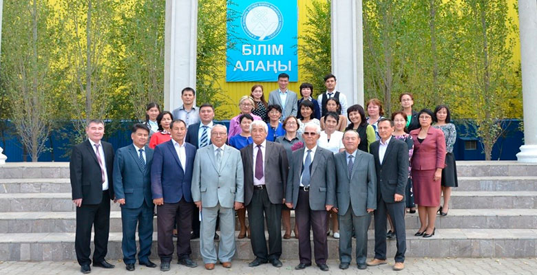

Факультет тарихы
Физика-математика факультеті 1966 жылы құрылып, математика, физика, ақпараттық жүйелер саласында іргелі зерттеулер жүргізу және кадрлар дайындау бойынша аймақтағы жетекші оқу және ғылыми орталығына айналды.
Факультет құрамында 3 кафедра бар:
Диссертациялық кеңес:
Zhubanov University-де 8D05301 — «Физика» және 8D05401 — «Математика» білім беру бағдарламалары бойынша философия докторы (PhD), бейіні бойынша доктор дәрежелерін беру үшін докторлық диссертацияларды қорғау жөніндегі диссертациялық кеңес ашылды. Кеңес Қазақстан Республикасы Білім және ғылым министрлігінің Білім және ғылым саласындағы бақылау комитеті төрағасының «Жоғары оқу орындарында философия (PhD) докторы, бейіні бойынша докторы ғылыми дәреже беру бойынша докторлық диссертацияларды қорғау жөніндегі диссертациялық кеңестер ашу туралы» бұйрығына сәйкес құрылды. Бұл тек оқу орнында ғана емес, елде де физика-математика ғылымдарын дамытудың жолы. Диссертациялық кеңес – ғылыми жұмыстармен айналысатын болашақ ғалымдардың еңбегін жіті ғылыми сүзгіден өткізетін және талдау жүргізетін ғалымдар кеңесі. Казіргі таңда қос дипломды білім беру бағдарламаларын 6В01501 – Математика және 6В01502 – Физика, 6В01503 – Информатика мамандықтары бойынша жүзеге асыру, сондай-ақ қос дипломды білім беру бағдарламалары бойынша Кытай мұнай газ университетімен жүзеге асырады.
